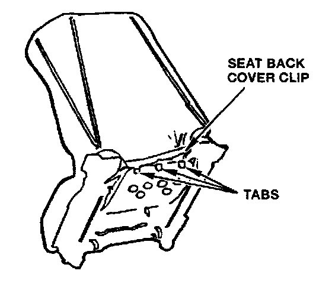
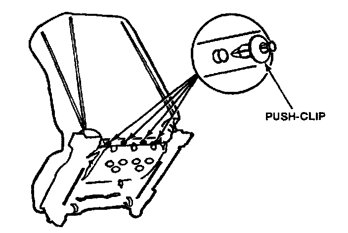

Interior - Seat Back Cover Clip Broken
December 15, 1992BULLETIN NO.
90-026
YEAR [NEW]
1991-93
MODEL
NSX
VIN APPLICATION
ALL
Broken Seat Back Cover Clip
(Supersedes 90-026, dated November 26, 1990)
PROBLEM
The tabs on the seat back cover clip break off, leaving the bottom of the cover loose.
CORRECTIVE ACTION
Secure the seat back cover clip with the push~lips listed under PARTS INFORMATION.
1. Slide the seat fully forward, then remove the two rear seat mounting bolts. Slide the seat fully rearward, then remove the two front seat mounting bolts. Remove the lower seat belt anchor bolt. Adjust the seat back to full recline, disconnect the seat wire harness, then remove the seat.

2. Place the seat on a clean, smooth surface with the headrest down and the white plastic seat back cover clip up.

3. Position the white plastic seat back cover clip in its original position, then drill four 8.5 mm holes through the clip and the aluminum seat bucket (one hole on either side of the original tab locations).
4. Insert a push-clip in each hole, and secure by pushing in the pin.
NOTE:
The clips can be removed by pushing the pin in further.
PARTS INFORMATION
Clip Assembly, 8 mm:
P/N 91545-SEO-003 (four per seat)
WARRANTY CLAIM INFORMATION
In warranty:
The normal warranty applies.
Out of warranty:
Any repair performed after warranty expiration may be eligible for goodwill consideration by the District Service Manager. You must request consideration, and get the DSM's decision, before starting work.
Operation number: 860125 (left)
862125 (right)
Flat rate time: 0.7 hour
Failed P/N: 81500-SLO-A01ZA
Defect code: 018
Contention code: A02

Disclaimer